01
习近平就发展先进制造业作出重要指示强调 持续做大做强先进制造业 为推进中国式现代化提供有力支撑 李强出席全国先进制造业大会并讲话
中共中央总书记、国家主席、中央军委主席习近平近日就发展先进制造业作出重要指示指出，党的十八大以来，我国先进制造业不断发展壮大，创新力、竞争力、综合实力显著增强，制造强国建设迈出坚实步伐。

中共中央总书记、国家主席、中央军委主席习近平近日就发展先进制造业作出重要指示指出，党的十八大以来，我国先进制造业不断发展壮大，创新力、竞争力、综合实力显著增强，制造强国建设迈出坚实步伐。
本台今天（9月17日）播发央视快评《坚持智能化绿色化融合化方向 持续做大做强先进制造业》。
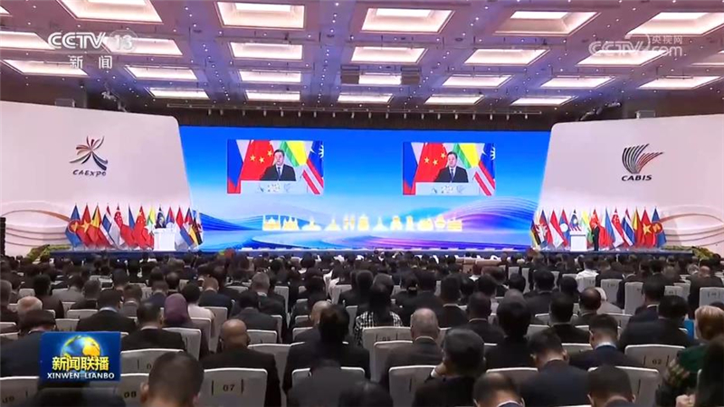
第23届中国—东盟博览会暨中国—东盟商务与投资峰会17日在广西南宁开幕，中共中央政治局常委、国务院副总理丁薛祥出席并致辞。
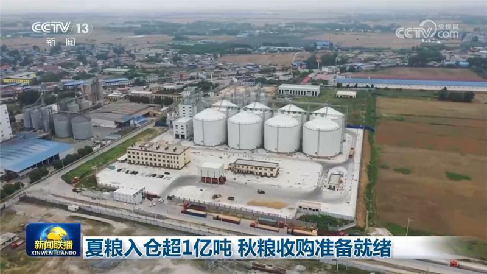
记者从国家粮食和物资储备局了解到，全国夏粮收购接近尾声，秋粮收购各项准备就绪。
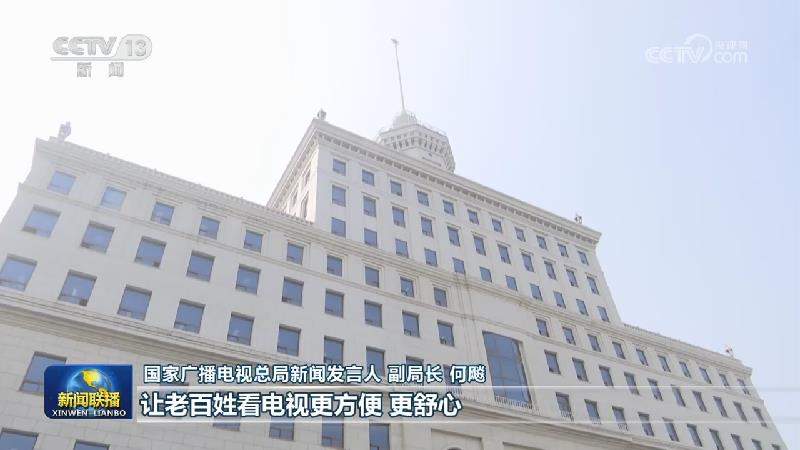
国务院新闻办公室今天（9月17日）举行“开局起步‘十五五’”系列主题新闻发布会，国家广播电视总局有关负责人介绍“十五五”时期加快推动广播电视和网络视听高质量发展有关情况。
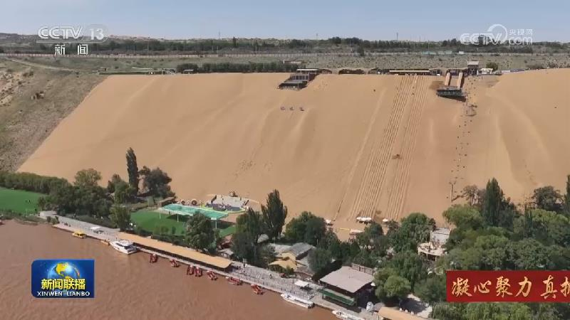
“十五五”期间，宁夏把“山水林田湖草沙”全域资源转化为文旅产品，积极发展特色旅游、全域旅游，努力打造国际旅游目的地。
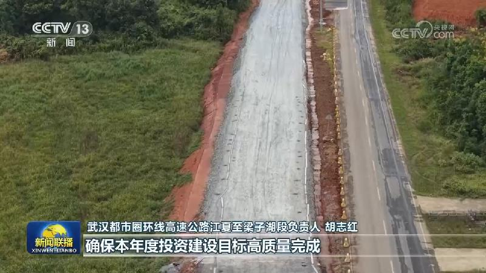
近日，今年新型政策性金融工具首批资金已启动投放，一批智能制造和基础设施项目相继获得首批资金支持，正加快推进实施，推动扩大有效投资。
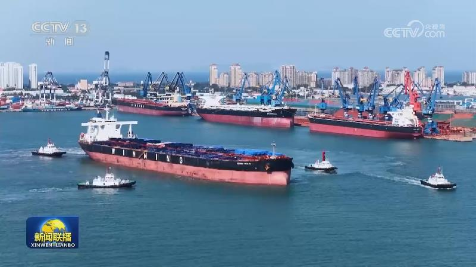
今年以来，我国物流行业数字化研发投入持续加码，智能化场景加速落地，推动物流行业提质增效、服务升级。
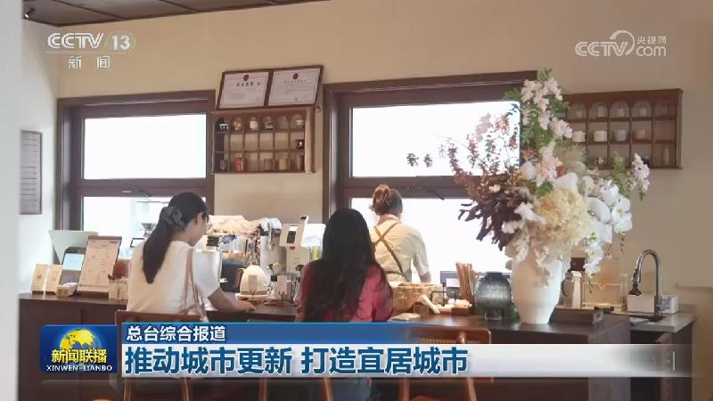
“十五五”开局之年，各地持续推动城市更新，改进民生设施，打造消费新场景，让城市更美丽宜居。
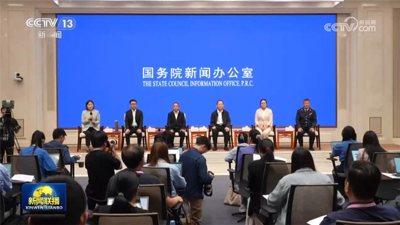
国务院新闻办公室今天（9月17日）举行“新征程上的奋斗者”中外记者见面会，5位驻村第一书记代表围绕“肩负使命，在乡村振兴一线实干”与中外记者见面交流，分享各自在发展特色产业、拓宽增收渠道、壮大集体经济、改善人居环境、增强党建引领等方面发挥优势、实干担当，努力带领乡亲们巩固拓展脱贫攻坚成果、增收致富的动人故事，生动展现了在推进乡村全面振兴中，驻村第一书记和工作队的良好形象和使命担当。
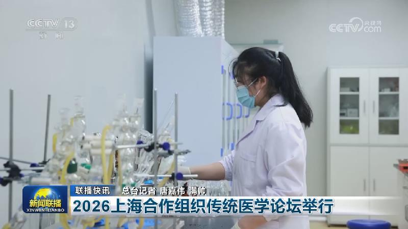
1至8月全国铁路完成固定资产投资5118亿元
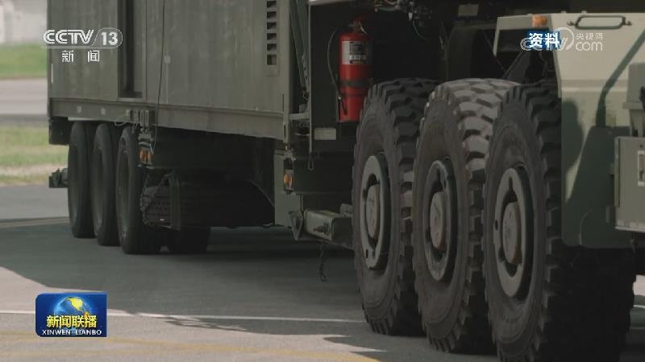
俄罗斯外交部16日发表声明说，俄副外长鲁登科当天会见日本驻俄大使武藤显时表示，日方持续执行反俄路线，包括近期对俄总统普京访问南千岛群岛的反应，以及扩大对乌克兰的军事援助，使俄日实现对话正常化的前景更加渺茫。俄方强调，日本推进“再军事化”具有危险性，包括与美国及其西方盟友在俄远东附近的军事训练活动，在日本境内部署中程导弹系统等，这些行为对俄国家安全以及东北亚和平构成直接威胁。……
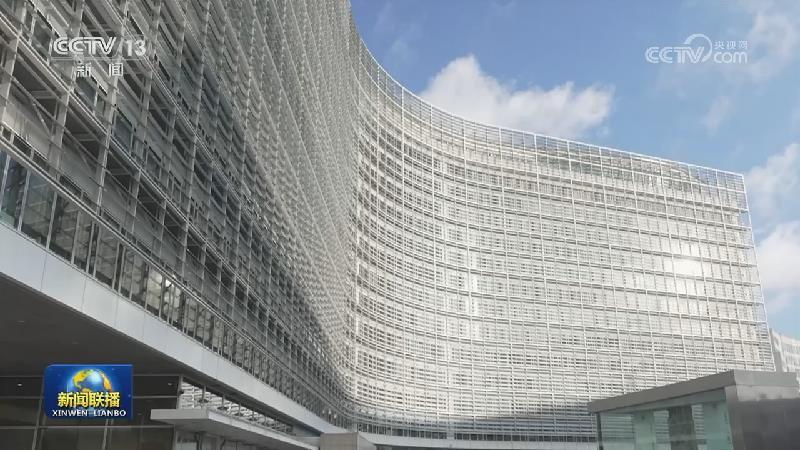
欧盟委员会主席冯德莱恩16日在欧洲议会发表盟情咨文时表示，将与加拿大政府共同努力推动加拿大成为首个欧盟准成员，欧盟希望把与加拿大的关系提升到尽可能高的水平。
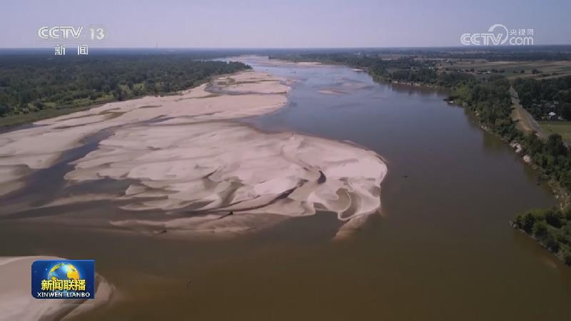
也门胡塞武装称打击沙特石油设施